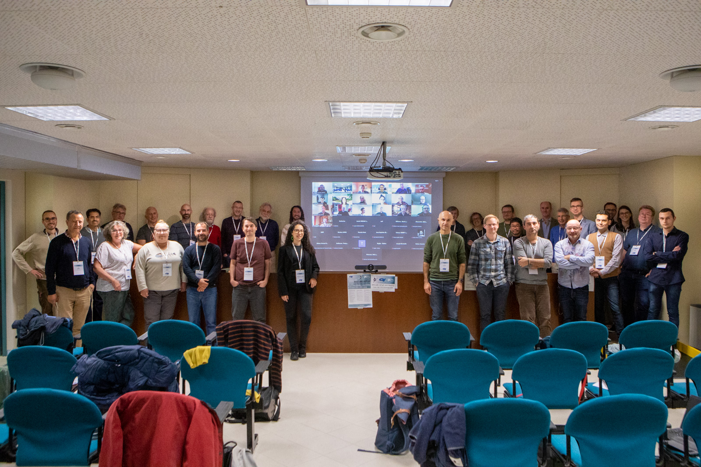

Joint MXCuBE-ISPyB Meeting organized by Elettra, 20.-22.11.2024
Status reports and updates from sites
ANSTO
ALBA
DESY
Elettra
ESRF
ESS
GPhL
HZB
MAX IV
NSRRC
Soleil (
Part 1
|
Part 2
)
SSRF (SARI)
MXCuBE scientific session
AbstractLims, ICAT and SSO integration, Marcus Oskarsson
Argussight Multi-view streamer for MXCuBE, Yan Walesch
Life Sciences Collaborative Access Team (LS-CAT) @ APS: UI LSnode, Joseph S Brunzelle
MANACÁ@Sirius macromolecular and chemical crystallography, Andrey Nascimento
MXCuBE Deployment Survey, Fabien Coronis
Automation session
Automated data collection at MASSIF-1 – getting the best data from *all* samples, Matthew W. Bowler
Automatic data collection at SPring-8/Japan, Kunio Hirata
Automation for serial crystallography data collection and processing at Diamond Light Source, James Beilsten-Edmands
MX automation: few perspectives from ESRF, Didier Nurizzo
The future of advanced automation at the NSLS-II_AMX beamline, Jean Jakoncic
VMXi – Fully automated room-temperature MX, James Sandy
Cyber security session
MXCuBE CyberSecurity Survey - Comparison and Summary, Alessandro Olivo
Status of CyberSecurity Investigation @ ANSTO, Jacob Oldfield
Minutes and reports
Developers' Committee summary
Steering Committee summary